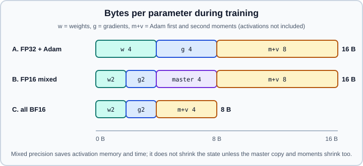

Hardware, Memory & Mixed Precision
|
This content was generated with the assistance of AI and should be verified against the official documentation before being relied on in production. |
Training speed and model size are limited by two hardware numbers: how many arithmetic operations per second the chip can perform, and how many bytes it can hold and move. Mixed precision attacks both at once by doing most of the arithmetic in 16-bit numbers. This page explains the processors, where training memory goes, the number formats and their pitfalls, and the PyTorch and Keras switches that turn mixed precision on.
The examples target Python 3.13, PyTorch 2.15 and TensorFlow 2.21 with Keras 3.15. The versions and API names were checked on 2026-10-30. Examples were run on Python 3.13 with PyTorch 2.15 and Keras 3.15 on TensorFlow 2.21 on 2026-11-01, on an Apple silicon machine without a CUDA GPU. The two CUDA-only snippets (peak-memory measurement and the mixed-precision training step) need an NVIDIA GPU and were not executed as written; the training step was checked on the CPU with device_type="cpu" and BF16. The other snippets ran, but a GPU is needed to see a speed or memory benefit. For the inference-side version of this arithmetic (weights plus KV cache for large language models) see Hardware Sizing; this page covers the training side.
Processors for machine learning
Neural networks are dominated by dense matrix multiplications and element-wise operations on large tensors. Those are highly parallel, so processors with thousands of simple arithmetic units beat a few fast general-purpose cores.
| Processor | Strengths | Practical notes |
|---|---|---|
CPU |
General purpose, large RAM, no special driver. Good for data preparation, small models and classic algorithms. |
Training a deep network on a CPU is possible but slow. Inference of small models is often fine. |
GPU |
Thousands of cores, high-bandwidth memory (HBM or GDDR) and matrix units (NVIDIA tensor cores, AMD matrix cores) that multiply small tiles in reduced precision. |
The default for deep learning. PyTorch supports CUDA (NVIDIA), ROCm (AMD), XPU (Intel) and MPS (Apple). TensorFlow 2.21 GPU wheels target Linux and WSL2 with CUDA. |
TPU |
Google’s matrix-multiply accelerators, organised in pods connected by a fast interconnect. Natural fit for JAX and TensorFlow, also reachable from PyTorch through XLA. |
Used mostly in Google Cloud. TensorFlow selects them with |
NPU |
Fixed-function inference units in phones and laptops, optimised for low-power INT8 or FP16 inference. |
Mostly an inference target reached through runtimes such as LiteRT or ONNX Runtime, not a training device. |
Apple silicon (MPS) |
CPU and GPU share one unified memory pool, so a model can use most of the machine’s RAM. |
PyTorch uses the |
Device-agnostic PyTorch code should not hard-code "cuda". The torch.accelerator module reports whichever accelerator is present:
import torch
if torch.accelerator.is_available():
device = torch.accelerator.current_accelerator() # cuda, mps, xpu, ...
else:
device = torch.device("cpu")
print("using", device)
x = torch.randn(4, 4, device=device)
print(x.device, x.dtype)Source: PyTorch, torch.accelerator
Compute-bound or memory-bound
Every operation either waits for arithmetic or waits for memory. The ratio of operations to bytes moved is the arithmetic intensity. A large matrix multiplication reuses each loaded number many times and is compute-bound, so faster arithmetic (tensor cores in 16-bit) helps. Element-wise operations, normalisation and activation functions touch each number once and are memory-bound, so only moving fewer bytes helps. Halving the width of a number type speeds up both kinds: twice as many numbers per memory transaction, and tensor cores that run at a higher rate for narrow types. Fusing several small operations into one kernel, which torch.compile does, attacks the memory-bound part directly.
Where training memory goes
During training a GPU holds four things for every model.
-
Parameters (weights), \(P\) numbers.
-
Gradients, one per parameter, so another \(P\) numbers.
-
Optimiser state. Plain SGD keeps nothing extra, SGD with momentum keeps one buffer, Adam and AdamW keep two (first and second moment estimates), so \(2P\) numbers.
-
Activations: the intermediate tensors of the forward pass that backpropagation needs. This is the part that grows with the batch size and the sequence length.
With Adam in FP32 the first three cost \(4 + 4 + 8 = 16\) bytes per parameter. A model with one billion parameters therefore needs 16 GB before a single activation is stored, which is why the common claim "a 1B model fits on a small GPU" is only true for inference.

The figure shows a counter-intuitive fact. Classic mixed precision (Micikevicius et al., 2018) keeps an FP32 master copy of the weights next to the FP16 working copy, so the state is still 16 bytes per parameter. PyTorch autocast is even simpler: the weights, gradients and optimiser state all stay in FP32 and only the arithmetic inside selected operations is cast down. So mixed precision mainly reduces activation memory and time, not the 16 bytes per parameter. To shrink the state itself you need pure BF16 training (weights, gradients and, with care, the optimiser state in BF16), 8-bit optimisers, or sharding the state across devices (see Distributed Training Concepts).
The estimator below makes the arithmetic explicit in plain Python.
def training_gib(params: float, bytes_weights=4, bytes_grads=4,
bytes_master=0, bytes_state=8) -> float:
"""Memory for weights + gradients + optimiser state, in GiB (no activations)."""
per_param = bytes_weights + bytes_grads + bytes_master + bytes_state
return params * per_param / 2**30
one_billion = 1e9
print(f"FP32 + Adam : {training_gib(one_billion):6.1f} GiB")
print(f"FP16 + master + Adam : {training_gib(one_billion, 2, 2, 4, 8):6.1f} GiB")
print(f"all BF16, BF16 Adam : {training_gib(one_billion, 2, 2, 0, 4):6.1f} GiB")This prints about 14.9, 14.9 and 7.5 GiB. Source: Micikevicius et al., Mixed Precision Training
Activation memory
Activation memory is roughly proportional to batch size times the number of stored tensors per layer. Long sequences make attention activations grow with the square of the length unless a fused attention kernel is used. Three levers reduce it:
-
A smaller batch, combined with gradient accumulation (below) to keep the effective batch size.
-
Mixed precision: stored activations are 16-bit, roughly halving them.
-
Activation checkpointing (also called gradient checkpointing): do not store some activations; recompute them during the backward pass. It trades about one extra forward pass of compute for a large memory saving.
PyTorch’s torch.utils.checkpoint requires the use_reentrant argument to be passed explicitly. Pass use_reentrant=False, the recommended implementation; the reentrant variant is the legacy behaviour.
import torch
from torch import nn
from torch.utils.checkpoint import checkpoint
class Block(nn.Module):
def __init__(self, width: int):
super().__init__()
self.net = nn.Sequential(
nn.Linear(width, 4 * width), nn.GELU(), nn.Linear(4 * width, width)
)
def forward(self, x):
return x + self.net(x)
class DeepModel(nn.Module):
def __init__(self, width: int = 512, depth: int = 24, use_ckpt: bool = True):
super().__init__()
self.blocks = nn.ModuleList(Block(width) for _ in range(depth))
self.use_ckpt = use_ckpt
def forward(self, x):
for block in self.blocks:
if self.use_ckpt and self.training:
# recompute this block's activations during backward
x = checkpoint(block, x, use_reentrant=False)
else:
x = block(x)
return x
model = DeepModel()
x = torch.randn(8, 128, 512, requires_grad=True)
model(x).sum().backward()
print("peak memory is lower than without checkpointing; compare with use_ckpt=False")Source: PyTorch, torch.utils.checkpoint
Keras 3 offers rematerialisation through its own API (see the Keras documentation for the current name and the backends that support it), and the JAX ecosystem exposes the same idea as jax.checkpoint.
Measuring instead of guessing
Estimates are only a start. Measure peak memory around one training step:
import torch
device = torch.device("cuda")
torch.cuda.reset_peak_memory_stats(device)
# ... run one forward, backward and optimizer step here ...
peak = torch.cuda.max_memory_allocated(device) / 2**30
reserved = torch.cuda.memory_reserved(device) / 2**30
print(f"peak allocated {peak:.2f} GiB, reserved by the caching allocator {reserved:.2f} GiB")
print(torch.cuda.memory_summary(device, abbreviated=True))max_memory_allocated is what tensors actually used; memory_reserved is larger because PyTorch’s caching allocator keeps freed blocks for reuse. Fragmentation can cause an out-of-memory error even when the total looks sufficient. Setting PYTORCH_ALLOC_CONF=expandable_segments:True often helps (PYTORCH_CUDA_ALLOC_CONF is now an alias of the same setting). torch.cuda.memory._record_memory_history() and the memory snapshot viewer show which allocation holds the memory. Source: PyTorch, CUDA semantics
Number formats
A floating-point number has a sign, an exponent (which sets the range) and a mantissa (which sets the precision). The formats used in deep learning differ in how many bits go to each.
| Format | Bits (sign, exponent, mantissa) | Largest finite value | Relative precision | Role |
|---|---|---|---|---|
FP32 |
1, 8, 23 |
about 3.4e38 |
about 1.2e-7 |
Default for parameters and accumulation. |
TF32 |
1, 8, 10 (stored in 32 bits) |
about 3.4e38 |
about 1e-3 |
NVIDIA tensor-core mode that rounds FP32 matmul inputs to a 10-bit mantissa. No code change to the model. |
FP16 |
1, 5, 10 |
65504 |
about 1e-3 |
Narrow range; needs loss scaling. |
BF16 |
1, 8, 7 |
about 3.4e38 |
about 8e-3 |
Same range as FP32, lower precision; usually no loss scaling. |
FP8 E4M3 |
1, 4, 3 |
448 |
coarse |
Forward pass weights and activations with per-tensor scaling. |
FP8 E5M2 |
1, 5, 2 |
57344 |
very coarse |
Gradients, which need range more than precision. |
BF16 versus FP16. FP16 has more precision but a tiny range: values above 65504 overflow to infinity and values below about \(6 \times 10^{-8}\) underflow to zero. BF16 trades precision for FP32’s full range, so activations and gradients almost never overflow. On hardware that supports BF16 (NVIDIA Ampere and later, recent AMD and Intel GPUs, TPUs, Apple silicon on recent chips) it is the simplest choice. FP16 remains the choice on older GPUs.
Why precision still matters. A BF16 number has only about 2-3 significant decimal digits. Adding a tiny update to a large weight can round to no change at all. This is why optimisers keep an FP32 master copy, why reductions and softmax accumulate in FP32, and why autocast keeps those operations in FP32 automatically.
FP8. Hopper and later NVIDIA GPUs run FP8 matmuls at roughly twice the BF16 rate, but each tensor needs a scale factor, and training stability is sensitive. In PyTorch, FP8 is reached through torchao’s float8 training and inference APIs (see Model Compression); treat it as an expert option.
Loss scaling
In FP16 the gradients of small losses can be smaller than the smallest representable number and flush to zero. Loss scaling multiplies the loss by a factor \(S\) (for example 65536) before backward(), which scales every gradient by \(S\) and moves it into the representable range. Before the optimiser step the gradients are divided by \(S\) again. A dynamic scaler lowers \(S\) when it detects an infinity or NaN in the gradients (and skips that step), and slowly raises \(S\) again after a run of good steps. BF16 has FP32’s exponent range, so it does not need loss scaling.
\[ g_{\text{true}} = \frac{1}{S}\,\frac{\partial\,(S \cdot L)}{\partial \theta} \]
Mixed precision in PyTorch
torch.autocast is a context manager that chooses the precision per operation: matmuls and convolutions run in the low-precision dtype, while numerically sensitive operations (softmax, losses, normalisation, reductions) are kept in FP32. The parameters themselves are not converted. Use the device-agnostic torch.autocast(device_type=...) and torch.amp.GradScaler(...); older tutorials show the CUDA-specific torch.cuda.amp spelling, which is deprecated and warns. The replacements for it and for other old idioms are listed in Legacy APIs & Migration. The complete training step below supports both dtypes: with BF16 the scaler is disabled and becomes a no-op.
import torch
from torch import nn
device = "cuda"
use_bf16 = torch.cuda.is_bf16_supported()
amp_dtype = torch.bfloat16 if use_bf16 else torch.float16
model = nn.Sequential(nn.Linear(1024, 2048), nn.ReLU(), nn.Linear(2048, 10)).to(device)
optimizer = torch.optim.AdamW(model.parameters(), lr=1e-3)
loss_fn = nn.CrossEntropyLoss()
# Loss scaling is only needed for float16.
scaler = torch.amp.GradScaler("cuda", enabled=(amp_dtype == torch.float16))
for step in range(100):
x = torch.randn(64, 1024, device=device)
y = torch.randint(0, 10, (64,), device=device)
optimizer.zero_grad(set_to_none=True)
with torch.autocast(device_type="cuda", dtype=amp_dtype):
logits = model(x) # matmuls in 16-bit
loss = loss_fn(logits, y) # loss computed in float32 by autocast
scaler.scale(loss).backward() # scaled gradients (no-op scale if disabled)
scaler.unscale_(optimizer) # gradients back to true scale
torch.nn.utils.clip_grad_norm_(model.parameters(), max_norm=1.0)
scaler.step(optimizer) # skips the step if gradients contain inf or NaN
scaler.update()Details that cause real bugs:
-
Wrap only the forward pass and the loss in
autocast. Do not wrapbackward()or the optimiser step. -
Call
scaler.unscale_(optimizer)before gradient clipping, otherwise you clip scaled gradients against an unscaled threshold. -
Do not call
.half()or.bfloat16()on the model and also useautocast; choose one. Calling.bfloat16()on a model gives pure BF16 training with no FP32 master weights, which needs care (stochastic rounding, FP32 optimiser state) to converge as well. -
Inside
autocast, avoid manual casts to FP32 for tensors that feed matmuls: autocast casts them back down. -
On CPU,
torch.autocast("cpu", dtype=torch.bfloat16)is available and benefits from AVX-512 BF16 or AMX instructions where present.
TF32
On NVIDIA Ampere and later GPUs, TF32 lets FP32 matmuls and convolutions use tensor cores at a small loss of precision, with no change to model code. PyTorch 2.15 exposes it with per-backend fp32_precision settings, which replace the older allow_tf32 flags:
import torch
# "tf32" lets tensor cores run FP32 matmuls and convolutions; "ieee" keeps full FP32.
torch.backends.cuda.matmul.fp32_precision = "tf32"
torch.backends.cudnn.conv.fp32_precision = "tf32"
print(torch.backends.cuda.matmul.fp32_precision)Older code uses torch.backends.cuda.matmul.allow_tf32 = True or torch.set_float32_matmul_precision("high"). These spellings come from earlier releases; prefer the fp32_precision form on 2.15 and check the release notes of your version if you must support older ones. TF32 is a speed-up for code that is already in FP32; if you use autocast with BF16 you rarely need it.
Mixed precision in Keras 3
Keras 3 expresses mixed precision as a dtype policy. A policy such as "mixed_bfloat16" or "mixed_float16" gives every layer a compute dtype (16-bit) and a variable dtype (float32). It works with the TensorFlow, JAX and PyTorch backends.
import keras
from keras import layers
keras.config.set_dtype_policy("mixed_bfloat16") # or "mixed_float16"
model = keras.Sequential(
[
layers.Input(shape=(784,)),
layers.Dense(1024, activation="relu"),
layers.Dense(10),
# Keep the final softmax in float32 for numerical stability.
layers.Activation("softmax", dtype="float32"),
]
)
print(model.layers[0].compute_dtype, model.layers[0].variable_dtype) # bfloat16 float32
model.compile(optimizer="adam", loss="sparse_categorical_crossentropy")
# model.fit(x_train, y_train, epochs=3, batch_size=256)Source: Keras, Mixed precision
With "mixed_float16", compile() automatically wraps the optimiser in a loss-scaling optimiser, so fit() handles loss scaling for you; a custom training loop must scale the loss itself. With "mixed_bfloat16" no loss scaling is used. The pitfalls mirror PyTorch: keep the output layer and the loss in float32, and do not choose mixed_float16 on hardware without good FP16 support. Mixed-precision speed-ups appear only when the dimensions of matmuls are multiples of 8 (or 64 for best results) so tensor cores can be used.
Gradient accumulation
When the desired batch size does not fit in memory, run several smaller micro-batches, add up their gradients, and take one optimiser step. The result equals one large batch (for losses that average over examples) as long as each micro-batch loss is divided by the number of accumulation steps.
import torch
from torch import nn
model = nn.Linear(32, 4)
optimizer = torch.optim.SGD(model.parameters(), lr=0.1)
loss_fn = nn.CrossEntropyLoss()
accum_steps = 4
optimizer.zero_grad(set_to_none=True)
for i in range(16): # 16 micro-batches of 8 = 4 steps of 32
x = torch.randn(8, 32)
y = torch.randint(0, 4, (8,))
loss = loss_fn(model(x), y) / accum_steps # scale so gradients average
loss.backward() # gradients accumulate in .grad
if (i + 1) % accum_steps == 0:
optimizer.step()
optimizer.zero_grad(set_to_none=True)Gradient accumulation trades time for memory, not the reverse. Batch normalisation statistics are still computed per micro-batch, so very small micro-batches change its behaviour; layer normalisation is unaffected. Under data parallelism, skip the gradient synchronisation on all but the last micro-batch (see Distributed Training Concepts).
Choosing a precision
Common pitfalls
-
Expecting a 2x memory saving from
autocast. The 16 bytes per parameter stay; only activations shrink. -
NaNloss with FP16. Missing or disabled loss scaling, a learning rate that is too high, or an operation forced into FP16. Try BF16 first. -
Clipping before unscaling. Always
unscale_first. -
Silent upcasts. A single FP32 tensor in an expression promotes the result to FP32 and removes the speed-up. Check dtypes of intermediate results.
-
Using
torch.cuda.ampin new code. It is deprecated; usetorch.amp. -
Benchmarking without synchronising. GPU kernels are asynchronous; call
torch.cuda.synchronize()before reading a timer. -
Odd tensor shapes. Dimensions that are not multiples of 8 can miss tensor-core kernels; pad vocabulary sizes and hidden sizes.
-
Training reproducibility. Mixed precision changes numerics slightly; results differ from FP32 runs and between GPU generations.
For how these choices interact with the optimiser and learning rate, see Optimizers & Learning Rate Schedules and Training Deep Networks. After training, reduce precision further for deployment as described in Model Compression.